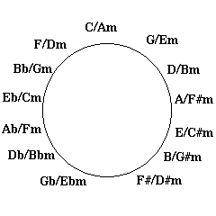
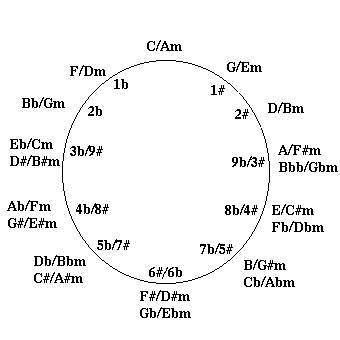

Theory On Tap
Lesson 5: The Circle of Fifths
by: Vance Gloster, Et al.
This document is licensed using the GNU copyleft license. That
means anyone can make a copy of this work. No one can sell a copy
of this work (they can charge a small copying fee for providing a
copy). Anyone can modify this work but they must make the resulting
work available under the same terms. It cannot be included in a
work (such as a book or magazine) that is sold without permission
which is usually granted in exchange for a license fee.
I. The Concept
 Lots of fields have some device that is used to illustrate concepts
which would be difficult to understand without it. A case in point is
the Moebius strip for mathematicians. This Moebius strip has only one
side and one edge despite being a 3-dimensional figure. It
illustrates some of the central concepts of Topology, a field of
mathematics that studies properties of physical shapes. Other fields
have similar symbols. Shipboard navigators had their sextants for
sighting stars, and engineers their sliderules.
Lots of fields have some device that is used to illustrate concepts
which would be difficult to understand without it. A case in point is
the Moebius strip for mathematicians. This Moebius strip has only one
side and one edge despite being a 3-dimensional figure. It
illustrates some of the central concepts of Topology, a field of
mathematics that studies properties of physical shapes. Other fields
have similar symbols. Shipboard navigators had their sextants for
sighting stars, and engineers their sliderules.
In music, the Circle of Fifths plays a similar role. The Free Hands
uniform 4ths/5ths tuning makes good use of many of the relationships
that the Circle of Fifths illustrates, so it is especially important
and relevant to it's methodology.
II. The Circle
The entire name of the Circle is "The Circle of Fifths and Fourths".
This is normally abbreviated to just The Circle of Fifths and in
its most basic form it looks like this:
As you go clockwise each successive note is a fifth above the
previous note. As you go counter-clockwise (or anticlockwise for
any UK residents) each note is a fifth below the previous note. So
where do fourths come into it? It is also true that as you go
clockwise each note is a fourth down from the previous note, and
as you go counter-clockwise each note is a fourth above the previous
note.
The internal relationship that makes this possible is the fact that
going up a fifth and down a fourth brings you to the same letter note
(though in a different octave). For instance going up a fifth from C
brings you to a G and going down a fourth from the same C brings you
also to G, but an octave down.
This particular trick is the basis of many of the interesting
properties of the tuning system of the Stick. The treble strings are
in fourths while the bass strings are in fifths and in reverse order.
This allows the same chord shapes to be played on both sides, though
they will result in different inversions.
III. Major Keys
The circle of fifths can also be used as a guide to figuring out how
many flats or sharps a particular key has. If you start at C and move
counterclockwise, each successive key has one more flat in its key
signature than the previous one. If you start at C and move
clockwise, each successive key has one more sharp than the previous
one. This means we can write the circle thus to show key signatures.
As you can see the key of A has 3 sharps, and the key of Db has 5
flats. But which notes are the flats and sharps? If you start at Bb
and move counterclockwise you will get the flats in order. For
instance in the key of Db the flats in the key signature are Bb, Eb,
Ab, Db, and Gb. If you start at F (which is right next to Bb, the
starting point for the flats) and move clockwise you will get the
sharps in order. For instance the sharps in the key of A are F#, C#,
and G#.
IV. Minor Keys
The order of the flats and sharps is done exactly like major keys.
|
V. Modes
Similarly to how we rotated the outer circle to change from major keys
(Ionian mode) to minor keys (Aeolian mode), one can do the same thing
for the other modes. Here is the information about how many steps and
the direction of rotation for all the modes from the normal major
position.
|
|
| Mode |
Number of steps |
Direction |
| Ionian |
0 |
|
| Dorian |
2 |
Counter-clockwise |
| Phrygian |
4 |
Counter-clockwise |
| Lydian |
1 |
Clockwise |
| Mixolydian |
1 |
Counter-clockwise |
| Aeolian |
3 |
Counter-clockwise |
| Locrian |
5 |
Counter-clockwise |
|
|
VI. Consonance vs. Dissonance
The circle also expresses whether a particular key change or chord
change will sound "smooth" (consonant) or "jarring" (dissonant) or
somewhere in between. The rule is that closer the two keys or chords
are on the circle, the more consonant it will sound. For example, if
you are playing in the key of C, the smoothest modulation is to move
to either F or G. The "whole step up" modulation that became a cliche
in pop music earlier in the century is a little more jarring, but
still pretty consonant being just one step further away on the circle
(C to D for instance).
|
|
Looking at the circle as representing chords, it is no accident that
the I, IV, and V chords of any key are adjacent (for instance C, F,
and G in the key of C) because these chords provide very consonant
progressions. On the other hand, moving 6 positions in either
direction provides a jump of a tritone (diminished fifth) which is the
most dissonant interval, key change, or chord change.
|
|
When analyzing real songs that include both major and minor chords it
is most useful to use a circle which has a major chord and the
relative minor at each position. It looks like this:
|
|

Click to see Vance's original
|
|
As you can see from this circle, very consonant songs like "Heart and
Soul" (C-Am-F-G) use a limited area of the circle (three positions)
while slightly more adventurous progressions like the Who's "I'm Free"
(C-F-G-D-G-A) use more area (five positions).
|
|
The proximity on the circle can also be used in a simplistic chord
substitution strategy. If you want a substitute chord for C in a
progression, the ones close to it on the circle will make reasonable
substitutes. Jazz theory teaches more involved chord substitution
approaches involving analysis of the progression, but this method can
get you started with it.
|
|
VII. Why a Circle and not a Line of Fifths?
So far we have spread the points around a circle, but it is not clear
why it should be a circle. One reason is that in a chromatic scale
there are only 12 possible notes (ignoring octaves). This implies
that if we make the circle a line, it will have to repeat itself a lot
as it streches toward infinity. On the other hand, there are almost
an unlimited number of ways to "spell" a particular note. For
instance C can be written as C, Dbb, Ebbbb, B#, A###, etc. Other
notes are commonly spelled two different ways (such as G# which is the
same note as Ab). So let us look at yet another circle of fifths that
allows each chromatic note a position, but which the different
"spellings" of that note share.
|
|

Click to see the original
|
|
The real reason we need the circle is so we can see the relationships
that go "around the back" of the circle. If you were reading a piece
of music and the key changed from Db (five flats) to F# (six sharps),
you would think that the effect would be jarring. But on the new
improved circle we can see that this is quite consonant because the
positions are adjacent. The only thing that is jarring is the change
in spelling, and if the musician is doing his or her job this is not
audible.
|
|
IX. Conclusion
The circle is a valuable tool that helps you to see the fundamental
relationships that music, and especially the Stick are based upon.
Spending time with it will usually result in a better understanding of
these relationships that can help both your playing and your
composition skills.
|
Lessons:
1|
2|
3 - Part I|
3 - Part II|
4 - Part I|
4 - Part II|
5|
6|
7|
8|
9|
10|
11|
12|
Copyleft 1995 Vance Gloster
Page maintained by Me